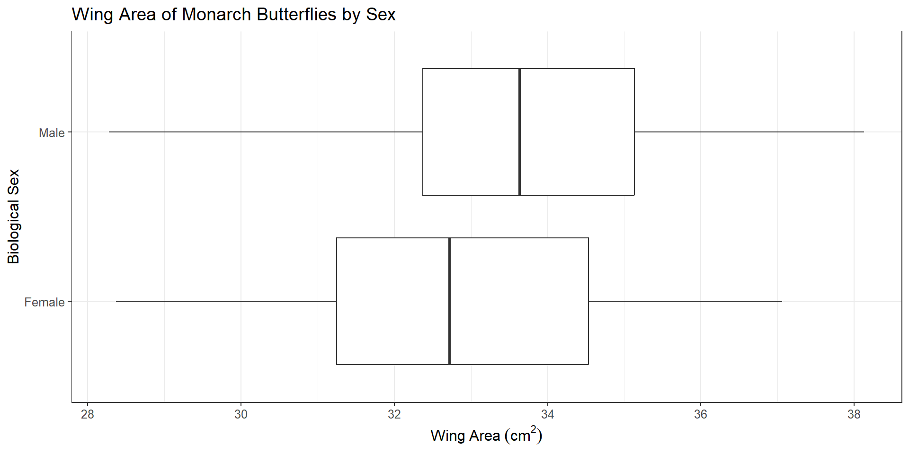

Independent Samples t-test and Confidence Interval
Let’s Revisit Monarch Butterflies Example
Let’s assume that we examined the wing areas of 92 Monarch butterflies (Danaus plexippus) from the eastern North American population (df = 91 and multiplier obtained from software: \(t^*\) = 1.99)
\(n = 92\), \(\bar{x} = 33.36\) \(cm^2\) and \(s= 2.22\) \(cm^2\)
95% confidence interval (CI) for \(\mu\) is:
\[ \\ \bar{x} \pm t^*_{df} \ \times \ \frac{s}{\sqrt{n}} \\ 33.36 \pm 1.99 \ \times \ \frac{2.22}{\sqrt{92}} \]
\[ \\ 95 \% \ CI = (32.90,\ 33.82) \]

Interpretation:
We are 95% confident that the population mean wing area of Monarch butterflies from eastern North America is between 32.90 \(cm^2\) and 33.82 \(cm^2\).
Step 1. Understanding the Study
In the previous example, we estimated the population mean wing area for Monarch butterflies from eastern North America using a sample of 92 butterflies.
We now use the same real study to estimate the difference in population mean wing area between male and female butterflies, \(\mu_{m}\) − \(\mu_{f}\).
\(n_m = 47,\ \bar{x}_m = 33.87 \ \text{cm}^2,\ s_m = 2.22 \ \text{cm}^2\)
\(n_f = 45,\ \bar{x}_f = 32.84 \ \text{cm}^2,\ s_f = 2.12 \ \text{cm}^2\)
Let’s first identify these:
observational unit, variable(s), parameter, statistic

Step 4. Parameter Estimation
95% Confidence Interval for \(\mu_{m}\) − \(\mu_{f}\). (multiplier obtained from software: \(t^*\) = 1.99)
\(n_{m}=47\) \(\bar{x}_m = 33.87\) \(cm^2\) and \(s_m= 2.22\) \(cm^2\)
\(n_{f}=45\) \(\bar{x}_f = 32.84\) \(cm^2\) and \(s_f= 2.12\) \(cm^2\)
\[ \\ (\bar{x}_m - \bar{x}_f) \pm t^*_{df} \ \sqrt{\frac{s_m^2}{n_m} + \frac{s_f^2}{n_f}} \\ \\ (33.87 - 32.84) \pm 1.99 \ \sqrt{\frac{2.22^2}{47} + \frac{2.12^2}{45}} \\ \\ 1.03 \pm 0.899 \]
95% CI for difference in population means = (0.131, 1.929)
Interpretation: We are 95% confident that the population mean wing area for male Monarch butterflies is between 0.13 cm² and 1.93 cm² higher than that for female Monarch butterflies in eastern North America.